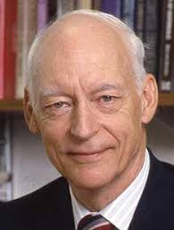

Bruce Wesley Arden
Bruce Wesley Arden (May 29, 1927 – December 8, 2021) was an American computer scientist. Arden enlisted in the U.S. Navy during World War II (1944-1946) as a Radar Technician Third Class in California, Chicago, and Kodiak, Alaska. He graduated from Purdue University with a BS(EE) in 1949 and began his computing career in 1950 with the wiring and programming of IBM's hybrid Card Programmed Computer/Calculator at the Allison Division of General Motors. He later worked as a programmer at the University of Michigan's Willow Run Laboratory.
Compiler Development
Arden became a research associate at the University of Michigan's Statistical Research Laboratory and later associate director of the university's Computing Center. He co-authored two compilers: GAT for the IBM 650 and MAD for the IBM 704/709/7090.

Virtual Memory and System Design
Arden contributed to the design and architecture of the IBM System/360 Model 67 computer, focusing on virtual memory features, and was involved in the initial design of the Michigan Terminal System (MTS) time-sharing operating system.

Academic Leadership
After earning his PhD in electrical engineering in 1965, Arden became a professor and chairman of the Computer and Communication Sciences department at Michigan. Later, he chaired the EECS department at Princeton University and became Dean of Engineering at the University of Rochester. He also served as Rochester's vice provost for telecommunications and computing.

Publications and Research
Arden wrote two books on numerical computation, edited another on computer science and engineering research, and published extensively on compilers, operating systems, computer logic, and networks.

Mentorship and Industry Consulting
Arden supervised many students in computing and served as a consultant to government agencies and major computer companies. He retired in 1995 and lived in Michigan and Maine.
.jpeg)